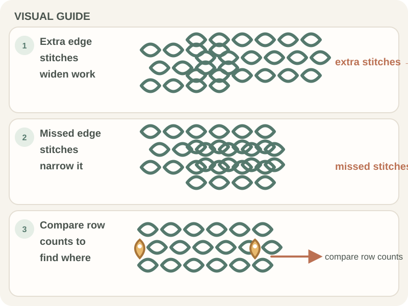

Patterns & Troubleshooting · Beginner guide
Why Is My Crochet Project Getting Wider or Narrower?
Find where a project’s stitch count first changes, then check edges, turning chains, increases, and decreases.
A piece that grows or narrows can reflect stitch-count changes, tension, or both. Measuring at intervals helps locate when the drift began.
Before you begin
Keep the pattern and row count nearby. For long repeats, use markers at repeat boundaries as well as edges.
Step-by-step instructions
- Measure the width and count stitches on the current row; compare with a recent row and the pattern.
- Find the first row where the count changed and inspect its first and last stitch.
- Check whether the turning chain counts and whether the pattern calls for an increase or decrease.
- If count is correct but width changes, compare tension and gauge before continuing.

What to check
Trace the change back one row at a time
Do not force edges flat by stretching. A count change suggests a skipped or added stitch; correct where it began if the edge shape matters.
Frequently asked questions
Why is my rectangle getting wider?
Look for extra stitches at row ends, including a turning chain worked when the pattern does not count it.
Can tension change width with the same count?
Yes. Larger or looser stitches can change dimensions even with an unchanged stitch count.